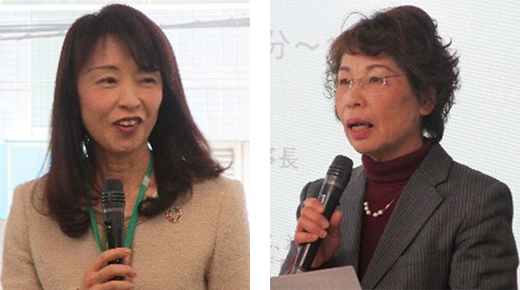
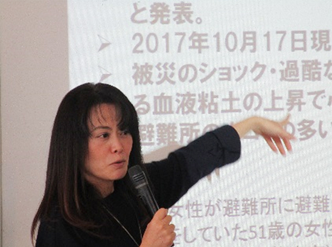
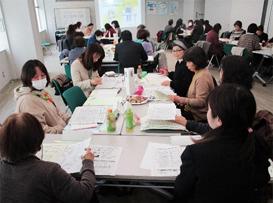

JA埼玉県女性組織協議会と埼玉県生協連との第25回早春交流会報告
「地域力と避難所運営」について一緒に学び、交流しました
2月12日（水）10時30分より、与野駅前のこくみん共済coop埼玉推進本部会議室にて、今年で25回目を迎えるJA女性組織協議会と埼玉県生協連の早春交流会を開催しました。昨年の早春交流会で、防災ブレスレットづくりをしたことを受けて、地域での防災・減災について考えることをテーマに学習し、日頃の活動交流も行いました。
1．報告の概要
- (1) 日時 2020年2月12日（水）10時30分～14時
会場 こくみん共済coop埼玉推進本部会議室（さいたま市中央区）
参加 JA女性組織協議会23人（JA埼玉中央5人、JAさいたま10人、JAいるま野5人、事務局4人）、埼玉県生協連23人（コープみらい9・パルシステム埼玉7・医療生協さいたま2・生協連2・事務局3）合計46人
講師 NPO法人男女共同参画おおた理事長 坂田静香さん


- (2) はじめに、県連常務理事の大久保美紀さん、JA女性組織協議会会長の栗嶋美津江さんよりあいさつがありました。
- (3) 次に講師の坂田静香さんに防災セミナー「地域力を高めて安心・安全な避難所運営 ～高齢者・障がい者・こども・女性など多様な視点に配慮する～ 」で、グループワークも交えながらお話しいただきました。
地域に暮らす多様な人の「違い」に配慮した体制や支援を考える際、女性の視点が大切であること、具体的な避難所運営のポイントなどについてもお話しいただきました。 - (4) 昼食時には防災セミナーを振り返りながら交流しました。その後JAと生協連から活動報告を行い、グループごとに活動交流を行いました。
2．参加者の感想

- どんな場においても男女どちらの意見も必要だということを改めて感じました。
- 自治体で役員になったので、女性目線の避難時に必要なことを共有したいです。
- 市で防災リーダーをしていますが、他地域での実例がとても参考になりました。
- 避難所運営の視点での講演が新鮮でした。
- 地域の防災交流会に参加して、炊き出しは女性、すべてを男性が仕切っていることを目の当たりにしました。自分が何とかしなければと思いました。
- 高齢者や赤ちゃん、障害のある人はもちろん、性的マイノリティの方への配慮も必要なことがわかりました。
- 「受援力」援助を受け入れる力が大事だということに気づきました。
- 生産者と消費者という立場で何かできたら楽しそうですね。JA女性協の方に講師としてきていただいて、みそ作り・赤飯づくりなど教えてもらいたい。つながれたらうれしいです。